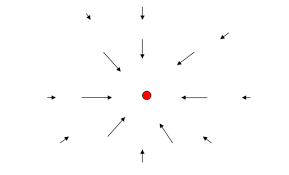

The gravitational field g at a point in space is defined as the gravitational force per unit mass experienced by a small test mass placed at that point:
Where:
The reason the gravitational field is defined as force per unit mass is to separate the effect of the source mass from the test mass. When you place any small object in the gravitational field created by a large mass \( M \), the force it experiences depends on its own mass \( m \). To understand the nature of the gravitational influence itself — independent of which object you place there — physicists define the gravitational field as the force that would act on a mass of exactly 1 kilogram.
This makes gravitational field strength a property of the space around the source mass, not a property of the object experiencing the force. Once the field \( \mathbf{g} \) is known, you can find the force on any mass \( m \) by simply multiplying: \( \mathbf{F} = m \mathbf{g} \).
This concept is similar to defining electric field in electromagnetism, where the field describes how a charge would be influenced independent of the test charge’s magnitude.
The gravitational field represents the influence that a mass \( M \) exerts on the space around it. Any other mass placed in this field experiences a force proportional to its mass.
Unlike force, the gravitational field is independent of the test mass placed in the field. It depends only on the source mass \( M \) and the distance \( r \).
At Earth's surface, the gravitational field strength is approximately \( 9.8 \, \text{N/kg} \), which corresponds to the familiar acceleration due to gravity \( g = 9.8 \, \text{m/s}^2 \).
The gravitational field is a vector field. This means at every point in space, it has both magnitude and direction:
When multiple masses are present, the total gravitational field at a point is the vector sum of the fields from each mass.
Gravitational field lines provide a visual way to understand the field's direction and strength:
These lines help explain how objects move under gravity and how the force varies in space.
Using the gravitational field allows us to:
Calculate the gravitational field strength \( g \) at a distance of 10,000 km from Earth's center. Earth's mass is \( 5.97 \times 10^{24} \, \text{kg} \).
This means the gravitational field strength (and acceleration due to gravity) is weaker at this altitude than at Earth's surface.
The gravitational field \( \mathbf{g} \) is the gravitational force per unit mass experienced by a test mass placed near a source mass. It is a vector field that decreases in magnitude with the square of the distance and points toward the source mass. Understanding gravitational fields helps predict forces and motions in multi-body systems and provides a foundation for more advanced physics concepts.